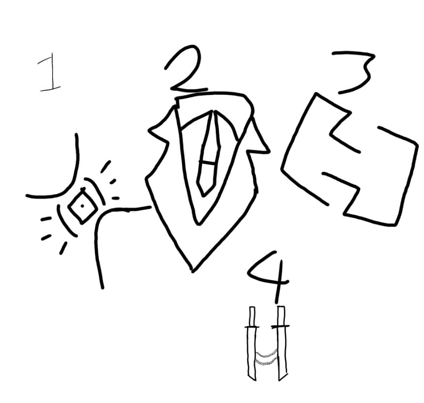
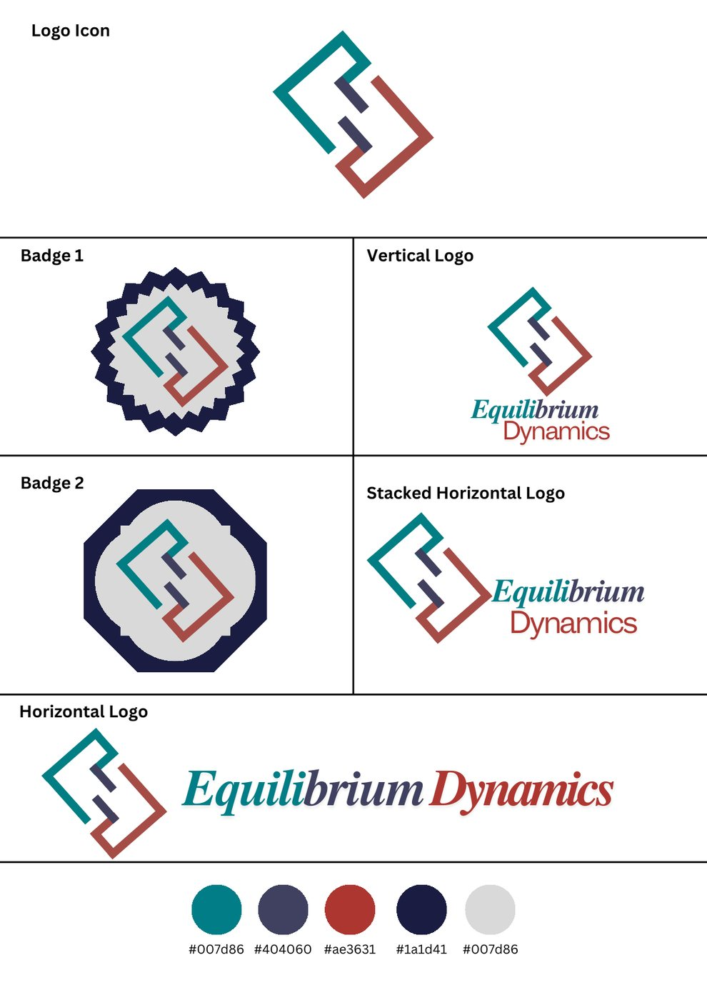

Prelim · Activity 1
Logo Concept Sketches
Four hand-drawn directions explored before settling on a logo. Each one tests a different idea for the shape of the brand.
My class activities, arranged by term, followed by the projects I built on my own and with my teams.
Brand identity, from the first sketches to a finished logo system.

Prelim · Activity 1
Four hand-drawn directions explored before settling on a logo. Each one tests a different idea for the shape of the brand.

Prelim · Activity 2
The finished logo system: the icon, two badge versions, and vertical, stacked, and horizontal lockups, plus the four-color palette (teal #007d86, slate #404060, red #ae3631, and navy #1a1d41).

Prelim · Activity 3
The brand on one page: the Equilibrium Dynamics logo, the tagline “Power in Balance”, three brand colors, the Touvlo and Tex Gyre Termes type pairing, and a mood board of paint, fluid, and brick textures.
Telling my story on camera.
Midterm · Activity 1
A short trailer that introduces me and LexiMetrix, mixing on-camera talk with animated screens.
Work I built outside the term activities.

Thesis
My thesis for City College of Calamba. Students submit anonymous comments in English, Tagalog, or Taglish, and LexiMetrix classifies the sentiment of each clause, groups results by aspect, and raises alerts so campus offices know where to act.
Includes a student portal and an officer dashboard.
A desktop pet simulator written in C with native Win32 graphics, plus a browser version that runs from a single HTML file. Built on Windows with the w64devkit compiler.
View repositoryA campus services and navigation project with a route overlay made of nodes and pathways to help students find their way around campus.
View repositoryA warehouse inventory and order terminal built for HCI 301. It runs in the browser and keeps its data locally, with an industrial interface designed around Shneiderman’s eight golden rules.
View repositoryA student emergency app taken from low-fidelity to high-fidelity. Testing showed the large top emergency button worked in a five-second test, while the stacked layout and a hidden services menu needed improvement.
More works will be added here as I build them.